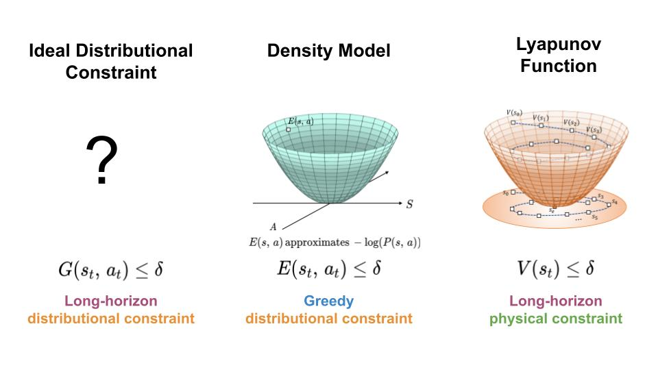

Since the initial release of Gorilla LLM on May 25, 2023, we're incredibly grateful for your overwhelming response. The Gorilla project is loved by developers worldwide. Through our integrations with an evergrowing set of API calls, we've close to serving ~500k user requests all from our small node at UC Berkeley. Some of you have gone ahead to train your own Gorilla's for your custom use-cases, and we love to see the community grow. To enhance the support for individual developers and enterprises looking to adopt, or train their own Gorilla models, we're collaborating with our colleagues to launch a comprehensive blog series. In this series will delve deeper into the intricacies of Gorilla and outline our strategic vision and roadmap for the future.
Introduction to Gorilla LLM

Gorilla is designed to connect large language models (LLMs) with a wide range of tools, services, and applications exposed through APIs. Imagine if ChatGPT could interact with thousands of services ranging from Instagram and Doordash to tools like Google Calendar and Stripe to help you accomplish tasks. You could ask to book a meeting for your collaborators, order their favorite foods, and pay for it. This may be how we interact with computers and even the web in the future.
Gorilla is an LLM that we train using a concept we call - retriever-aware training, that can pick the right API to perform a task, that a user can specify in natural language. We also introduce an Abstract Syntax Tree (AST) based sub-tree algorithm, which for the first time can measure hallucination of LLMs!
Reality Bytes: How to Measure Hallucinations in LLMs
Imagine you ask your grandmother for her famous strawberry rhubarb pie recipe. She misspeaks occasionally and tells you to “break the strawberry” when she likely meant to say “cut the strawberries”. Unlike casual stories about her college days, you need accurate information in order to actually bake the pie this weekend, so you recognize that she misspoke and ask her to clarify. Language models have the similar tendency to “misspeak” or hallucinate, which leads to challenges in API usage since concrete actions must be taken. In Gorilla, imagine we ask the LLM “generate an API call for a vision model to identify ripe strawberries”.
Retriever-Aware Training (RAT): Are LLMs memorizing or understanding?
Pretrained Language Models (LLMs) need instruction tuning to better align with human incentives. These methods both improve the model's behavior and accuracy when they are trying to answer questions for a specific domain. However, traditional instruction tuning has limitations regarding adaptability, dependency on the in-context examples, and the potential to hallucinate. We introduce "retriever-aware training," a new methodology that holds the promise of addressing some of these challenges. Let's dive into the details of that.